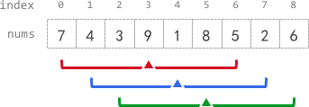

| Category | Difficulty | Likes | Dislikes |
|---|---|---|---|
| Algorithms | Medium | 2054 | 103 |
facebook | duolingo
You are given a 0-indexed array nums of n integers, and an integer k.
The k-radius average for a subarray of nums centered at some index i with the radius k is the average of all elements in nums between the indices i - k and i + k (inclusive). If there are less than k elements before or after the index i, then the k-radius average is -1.
Build and return an array avgs of length n where avgs[i] is the k-radius average for the subarray centered at index i.
The average of x elements is the sum of the x elements divided by x, using integer division. The integer division truncates toward zero, which means losing its fractional part.
2, 3, 1, and 5 is (2 + 3 + 1 + 5) / 4 = 11 / 4 = 2.75, which truncates to 2.
Example 1:

Input: nums = [7,4,3,9,1,8,5,2,6], k = 3
Output: [-1,-1,-1,5,4,4,-1,-1,-1]
Explanation:
- avg[0], avg[1], and avg[2] are -1 because there are less than k elements before each index.
- The sum of the subarray centered at index 3 with radius 3 is: 7 + 4 + 3 + 9 + 1 + 8 + 5 = 37.
Using integer division, avg[3] = 37 / 7 = 5.
- For the subarray centered at index 4, avg[4] = (4 + 3 + 9 + 1 + 8 + 5 + 2) / 7 = 4.
- For the subarray centered at index 5, avg[5] = (3 + 9 + 1 + 8 + 5 + 2 + 6) / 7 = 4.
- avg[6], avg[7], and avg[8] are -1 because there are less than k elements after each index.Example 2:
Input: nums = [100000], k = 0
Output: [100000]
Explanation:
- The sum of the subarray centered at index 0 with radius 0 is: 100000.
avg[0] = 100000 / 1 = 100000.Example 3:
Input: nums = [8], k = 100000
Output: [-1]
Explanation:
- avg[0] is -1 because there are less than k elements before and after index 0.
Constraints:
n == nums.length1 <= n <= 1050 <= nums[i], k <= 105